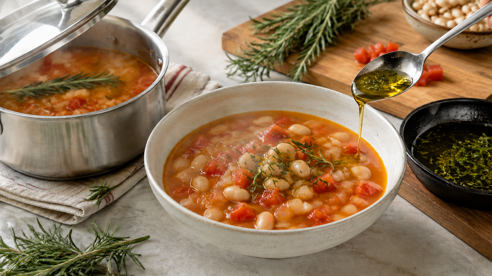

ハーブの香りは、油と水で別の顔になる。二段で入れるローズマリースープ
スープにローズマリーを入れたのに、思ったほど香らない。
反対に、オイルへ混ぜると、少量でも急に香りが立つ。
これは腕の差ではない。ハーブの香りは一種類ではなく、それぞれ水や油とのなじみ方が違うからだ。
今日の結論
ハーブの香りを厚くしたいなら、全部を最初から煮込まない。
水の中で短く抽出する分と、油へ移して仕上げに加える分に分ける。 水が拾う香りと、油が抱えやすい香りを一皿へ重ねられる。
大切なのは「油なら全部取れる」「水では香らない」と決めつけないことだ。どちらにも香りは移る。ただし、移りやすい成分の顔ぶれと、加熱中に空気へ逃げる量が違う。
一枚の葉の中に、性格の違う香りがいる
ハーブの香りは、葉の表面や組織にある小さな袋へ蓄えられている。刻む、ちぎる、すりつぶすと袋が壊れ、中の成分が出てくる。
その成分には、水と近づきやすいものもあれば、水を避けて油へ入りやすいものもある。後者の性質を脂溶性という。
砂糖は水へ消え、ドレッシングの油は水面へ集まる。同じように、香りの分子も、自分となじみやすい場所へ移る。ただし、ハーブの香りは何十もの成分が混ざっているため、全員が同じ動きをするわけではない。
ハーブの利用法をまとめた日本調理科学会誌の解説でも、水へ浸す方法は水になじむ成分を、植物油へ浸す方法は油になじむ成分を取り出す方法として整理されている。
水にも香りは移る。ただし、残る顔ぶれが変わる
ローズマリーを熱湯へ浸した一次研究では、抽出液にも1,8-シネオール、カンファー、α-テルピネオール、ボルネオールなどの香りが確認された。
ところが、その構成はローズマリーの精油と同じではなかった。水になじみにくく、しかも飛びやすい炭化水素系の香りは大きく減り、比較的水側へ残りやすい、酸素を含む香りの割合が高くなった。
ここから分かるのは、水が「薄い油」になるわけではないことだ。水は水なりの選び方で香りを受け取る。だから、ハーブティーやスープの香りは、オイル漬けの香りと同じ強さにしただけでは再現できない。
家庭料理では、葉を短く刻み、ふたをして短時間だけ煮るとよい。組織から香りを出しつつ、湯気と一緒に逃げる時間を長くしすぎないためだ。
油は、ハーブの違いまで抱え込む
ローズマリーとバジルをオリーブ油へ加えた別の一次研究では、ハーブ由来の複数の香りが油へ移った。ローズマリーではカンフェンやリモネン、バジルではオシメンなど、油へ移った成分の組み合わせもハーブごとに違った。
ただし、葉にあった香りがすべて油へ移ったわけではない。香りへの寄与が小さい成分もあり、時間が長ければ単純によくなるとも限らなかった。
油は香りを捕まえる受け皿にはなるが、強い加熱を続ければ、香りは油からも空気へ逃げる。そこで、仕上げ用の油は沸かさず、弱い火で短く温める。香りが立ったら火を止め、食べる直前に加える。
今日の一皿：二段香りの白いんげん豆スープ
材料（2人分）
- ゆで白いんげん豆 200g
- 玉ねぎ 100g
- トマト 150g
- 水 400mL
- 生ローズマリー 2枝
- オリーブ油 20g
- 塩 4g
- 黒こしょう 少々
作り方
- 玉ねぎは1cm角、トマトは2cm角に切る。ローズマリーは1枝をそのまま残し、もう1枝の葉だけを細かく刻む。
- 鍋へオリーブ油10gと玉ねぎを入れ、弱めの中火で5分炒める。トマト、白いんげん豆、水、塩3g、枝のままのローズマリーを加える。
- 沸いたら弱火にし、ふたをして8分煮る。ローズマリーの枝を取り出し、残りの塩で味を整える。
- 小さなフライパンへ残りのオリーブ油10gと刻んだローズマリーを入れ、弱火で約1分温める。細かな泡が出て香りが立ったら、色づく前に火を止める。
- スープを器へ盛り、ローズマリー油を回しかけ、黒こしょうを振る。作った香り油は保存せず、その日のうちに使い切る。
煮込みの香りはスープ全体を支え、最後の油は鼻へ抜ける香りを持ち上げる。一つのハーブでも、入れる場所と時間を分けると、量を増やしすぎずに立体感を作れる。
この考え方を、ソースや買い物にも広げる
ハーブを使うときは、レシピ名よりも「料理のどこに水があり、どこに油があるか」を見る。
スープや煮込みなら、少量を水側へ早めに入れ、残りを仕上げの油やバターへ移す。ドレッシングなら、ハーブを油へなじませた後、酢や果汁と合わせる。乳製品にも脂肪があるので、クリームやヨーグルトは油側の受け皿として考えられる。
買い物でも同じだ。生の葉は切った瞬間の軽い香りを足しやすく、乾燥ハーブは水分が少ないため煮込みや油へ少量ずつ使いやすい。どちらが上ではなく、香りを置きたい場所で選ぶ。
今日のまとめ
ハーブの香りは一つではなく、水になじみやすい成分と、油へ移りやすい成分が混ざっている。
熱湯にも香りは出るが、精油や香味油と同じ顔ぶれにはならない。さらに長く加熱すると、せっかく出た香りが湯気と一緒に逃げやすい。
次にハーブを使うときは、全部を鍋へ入れない。半分はふたをして短く煮て、半分は弱火の油へ移し、最後に一皿へ戻そう。
参考文献
- Tschiggerl C, Bucar F. Investigation of the Volatile Fraction of Rosemary Infusion Extracts. Scientia Pharmaceutica. 2010;78(3):483-492. https://doi.org/10.3797/scipharm.1004-23
- Díaz-Montaña EJ, Aparicio-Ruiz R, Morales MT. Effect of Flavorization on Virgin Olive Oil Oxidation and Volatile Profile. Antioxidants. 2023;12(2):242. https://doi.org/10.3390/antiox12020242
- 榊原巌. ハーブの日常生活への利用―特にハーブティについて―. 日本調理科学会誌. 2016;49(5):333-336. https://www.jstage.jst.go.jp/article/cookeryscience/49/5/49_333/_pdf/-char/ja